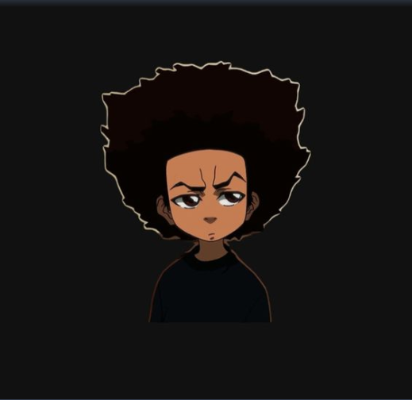

⚽ Football Analytics
Engineered a predictive data pipeline using Python and Pandas to parse multi-variable football performance metrics, automating data-cleaning protocols for high-variance datasets.
Python • Pandas • Data Cleaning
Computer Science Student | Python • Data Analytics • Football Analytics
I build data-driven solutions with Python, Pandas, and SQL, turning complex datasets into actionable insights while documenting my journey in public.

I'm a Computer Science student with a growing focus on sports analytics and artificial intelligence. I enjoy transforming messy datasets into structured insights using Python and SQL.
Lately, I've been building football analytics workflows, documenting my progress on GitHub, and exploring machine learning applications for elite athletic performance data.
Engineered a predictive data pipeline using Python and Pandas to parse multi-variable football performance metrics, automating data-cleaning protocols for high-variance datasets.
Developed a low-level structural C record environment implementing custom memory allocation strategies and multi-dimensional pointer arrays to eliminate runtime overhead.
A lightweight web tool to monitor daily deep work metrics, goals, and personal growth targets.